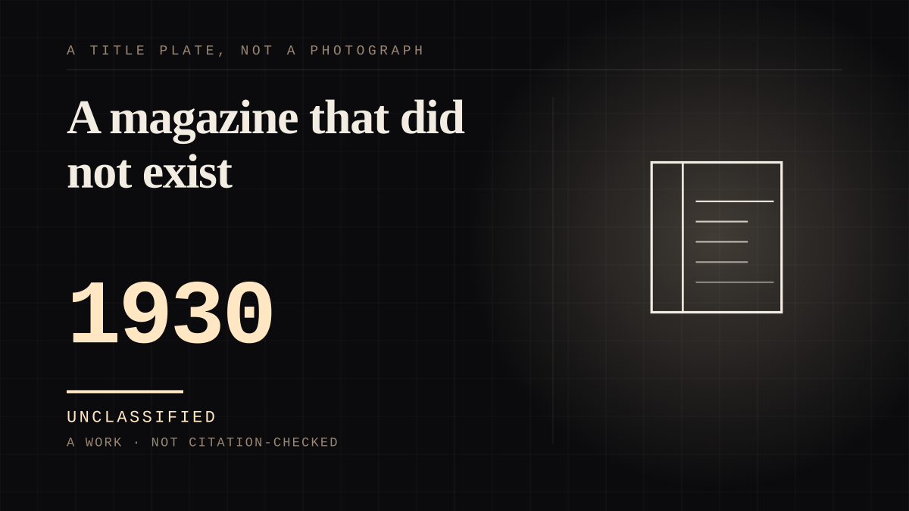

A work · 1930 · Radio
A magazine that did not exist
Street & Smith hired two men to sell a magazine on the radio. They invented a voice instead, and the listeners went asking newsdealers for the magazine that voice implied.

The best-documented case in this corpus of a one-sided bond producing demand for a physical object that was never manufactured, and it is the origin of the shadow as a mass medium. Street & Smith wanted to sell Detective Story Magazine, so they hired David Chrisman of an advertising agency and the writer-director William Sweets to turn the stories into a serial. Their actual plan was modest: a mysterious storyteller with a sinister voice, and then they needed a name for him. One scriptwriter, Harry Engman Charlot, proposed The Shadow. First broadcast 31 July 1930 as the narrator of the Detective Story Hour, voiced at first by James LaCurto and, four months later, by Frank Readick Jr. The stories were unrelated to the voice, and that turned out to be the whole business. Listeners found the announcer far more compelling than the fiction he was attached to, and began asking newsdealers for 'that Shadow detective magazine, even though it did not exist.' A bond with a voice generated a market for a book series that Street & Smith had to then commission, and the character's own power set is built around the axis this site is about: in radio and film he can turn himself invisible - except for his shadow, which cannot be hidden, for reasons nobody in the stories explains. A figure whose one unhidable property is the thing that gives him away. Two honesty notes kept on the entry: in the magazine stories the Shadow did not become literally invisible at all, and the famous opening line is a radio adaptation's, spoken by Readick, not the print character's. And the honest placement is made, not mirrored. The Shadow is not supplied by the person who loves him; he is assembled by a publisher, an advertising agency, a writer-director and a scriptwriter, which is the same structure as howdy-doody eight years later - a voice first, and a figure only once somebody needs one.
Where it sits
1900 1900-1949 · 1930 1949
Provenance · 1 source record(s)
- retrievableThe origin, the invented name and the magazine that never existed: Street & Smith Publications hired David Chrisman, of the Ruthrauff & Ryan advertising agency, and writer-director William Sweets to adapt Detective Story Magazine's stories into a radio series; they 'thought the upcoming series should be narrated by a mysterious storyteller with a sinister voice and began searching for a suitable name'; scriptwriter Harry Engman Charlot proposed the alternatives 'The Inspector' and 'The Sleuth' and then The Shadow, which was 'the name given to the mysterious narrator of the Detective Story Hour radio program' beginning 31 July 1930, first voiced by James LaCurto and replaced after four months by Frank Readick Jr. 'Although the latter company had hoped the radio broadcasts would boost the declining sales of Detective Story Magazine, the result was quite different. Listeners found the sinister announcer much more compelling than the unrelated stories. They soon began asking newsdealers for copies of "that Shadow detective magazine", even though it did not exist.' Also: in the magazine stories the Shadow did not become literally invisible, and the radio opening line - 'Who knows what evil lurks in the hearts of men? The Shadow knows!' - has earned a place in the American idiom. Powers in radio and film include turning himself invisible 'except for his shadow, which cannot be hidden, for unknown reasons'.The Shadow. Wikipedia. ↗
COMPANION The assistant you talk to
Connected · 3 out, 5 in
It sits in